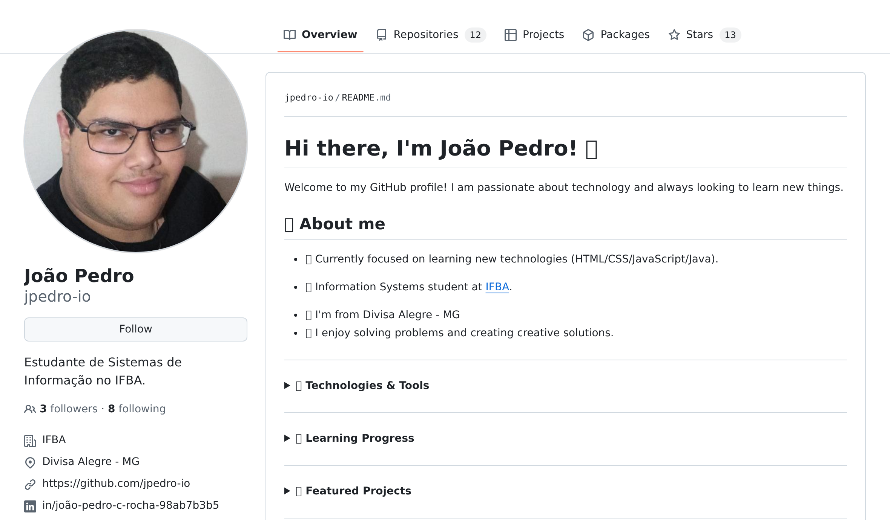
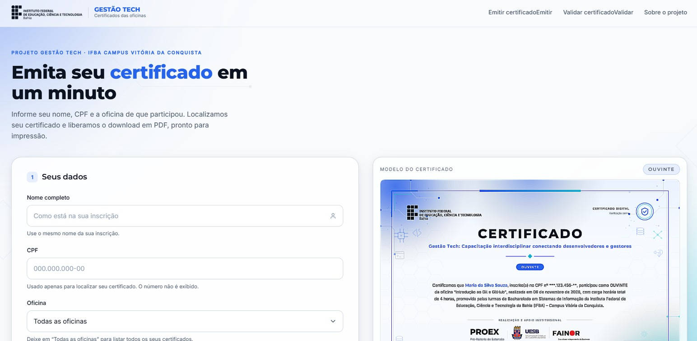
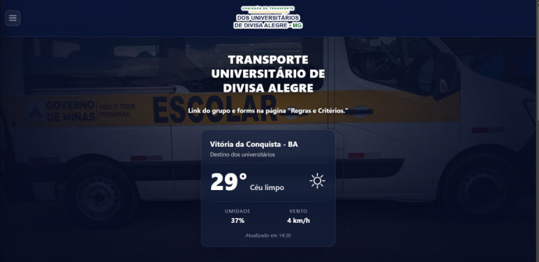

Manutenção de computadores e impressoras, sites profissionais e documentos impecáveis. Uma pessoa só, responsável por tudo — e nenhum cliente paga mensalidade.

primeiro documento entregue a uma professora de Divisa Alegre
ingresso em Sistemas de Informação no IFBA — e os primeiros sites
a New Tech vira marca: documentos, manutenção e web num lugar só
de mensalidade: todo projeto é valor único, do jeito que tem que ser
Uma professora precisava entregar um relatório naquele dia e o computador não cooperava. O documento saiu, o prazo foi cumprido — e a notícia correu pela sala dos professores.
O que era favor virou ofício, o ofício virou estudo, e o estudo virou a New Tech: tecnologia com nome, sobrenome e cidade.
Relatórios, diários de classe e PDI para professoras de Divisa Alegre. Cada entrega no prazo rendia mais três pedidos na semana seguinte.
A confiança dos professores abriu a porta das casas e comércios: formatações, backups e impressoras que “não funcionavam” voltando à vida.
A entrada no curso transformou prática em método. Entre uma disciplina e outra, os primeiros sites — e a descoberta de que dava pra unir as duas pontas.
Documentos, manutenção e web numa marca só. Os primeiros clientes comerciais chegam pelo WhatsApp e indicam os próximos.
Marca redesignada, portfólio aberto e foco em landing pages que transformam reputação em vendas para o comércio local.


Você conta o problema ou o projeto. Eu devolvo um diagnóstico honesto — inclusive se a solução não for comigo.
Preço fechado, prazo e escopo por escrito. 50% de entrada, 50% na entrega. Nada de mensalidade surpresa.
Você vê o andamento e pede ajustes dentro das revisões do pacote. Sem sumiço, sem “depois eu vejo”.
Acessos no seu nome, documento de entrega e 15 dias de garantia técnica. Simples assim.
Orçamento sem compromisso, resposta rápida e aquele atendimento de quem mora na mesma cidade que você.